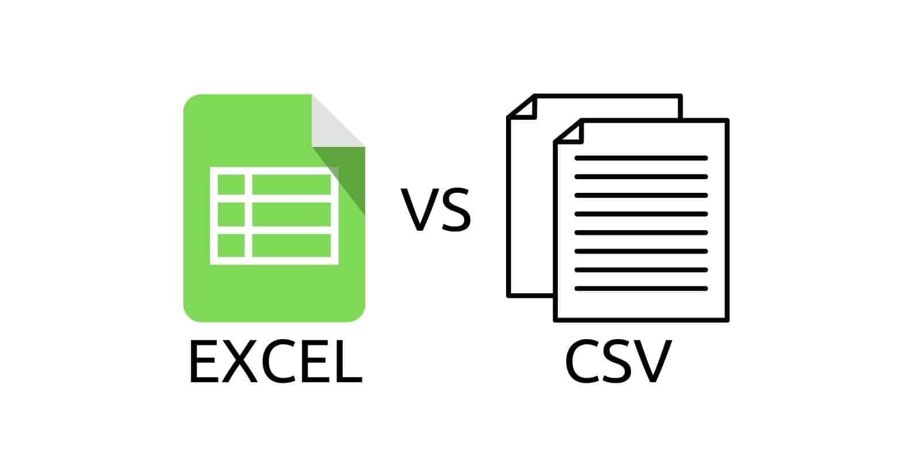

What is a CSV file?
First up, let’s discuss what exactly is a CSV file. As the name suggests, a CSV file is a Comma-Separated Values file, which means the values are separated by commas (duh). The first row of the file normally contains headers, which help give clarity to what the row data represents. Basically, think of a CSV file as an excel file, with commas separating all the values in the excel file.

Think of CSV files as just another format for Excel sheets!
As amazing as CSV files are, at the end of the day they are still just text files formatted in a standard way to separate values. This means that they are limited to storing string values only. You can easily convert these values to other data types but the raw data values that CSV files store are still in the form of strings. If our data values contain commas, they will simply be wrapped with quotes (“) to clarify that they are still one single data value. For example:
name,country,address
John,Singapore,“123 Avenue, Singapore 123456”
Tom,USA,“567 Boulevard, Phoenix AZ 01234”
Mary,Singapore,“789 Street, Singapore 987654”
Another important concept to learn is delimiters. A delimiter is a character that is used to separate strings in a data file. In the case of CSV files, as you can guess, the delimiter is a comma character (,). In data management, it’s common to meet files with a variety of delimiters, most commonly commas, tabs and colons. Take note of the delimiter used in your files before beginning to process them.
Reading and Writing
Now that we are familiar with what a CSV file is, let’s get to opening them in Python! To open any file (not limited to CSV files), Python has the open() function. The open() function helps us to access data within any file and returns it as a file object. To use it, we simply assign the opened file as a variable, and then access the data within it with separate methods.
It takes in two parameters. The first parameter is the filepath of the file we want to access, the second is whether we are reading, writing or appending to the file (represented by “r”, “w” and “a”). The default value for the second parameter is read (“r”). For example, imagine you have a CSV file named “fruits.csv” that looks something like this:
name,colour,quantity
Apple,Red,10
Banana,Yellow,5
Pear,Green,7
To access this CSV file, I just have to open it as a variable:
file = open(“fruits.csv”)
#The default variable for open() is for reading (“r”)
One of the methods we can use is the .read() method, which helps us to return the contents of the file in bytes. It takes in one optional parameter, the number of bytes from the file you want to read. For example:
file = open(“fruits.csv”)
print(file.read())
#This will output the entire “fruits.csv” file
Another method is to read a text file line by line using the .readlines() method. This will return every line of the file as a list of strings. For example:
file = open(“fruits.csv”)
lines = file.readlines()
for line in lines:
print(“Line: “ + line)
#This will output the file line by line
As for writing, we have to specify that we are writing to the file (“w”) and then use the method .write() to add more content to the file! Take note that writing to the file also means overwriting the current contents of the file. In other words, it will completely clear all the data on the current file before then writing the new content into the file. For example:
file = open(“fruits.csv”, “w”)
#Since the default parameter is “r”, we must specify “w”!
file.write(“OH NO I OVERWROTE EVERYTHING!”)
#This will cause “fruits.csv” to only contain the above string!
More often than not, we would like to append to files instead of writing over them. Appending basically means adding to them, much like how we append objects to lists! Appending is very similar to writing, but instead of passing the “w” argument, we pass the “a” argument! For example:
file = open(“fruits.csv”, “a”)
#Since the default parameter is “r”, we must specify “a”!
file.write(“Mango, Yellow, 10”)
#This will cause “fruits.csv” to append a new row for Mango!
When opening files, it’s always important to close them after you’re done with them! Leaving files opened even though you are finished with them is a very bad practice and can lead to many inadvertent consequences. For example, some operating systems can only manage a limited number of open files at one time, thus leaving too many files open without closing them can lead to performance issues when running your script.
We can close files very simply using the .close() method. For example:
file = open(“fruits.csv”)
print(file.read())
file.close()
#This closes the file!
Alternatively, python has another important keyword that we can use, the with keyword! Using with, we can automatically close the file as soon as we are done with it. The syntax looks something like this:
with open(“fruits.csv”, “w”) as file:
print(file.read())
print(“File is now closed”)
#As soon as we exit indentation, the file will close!
CSV writer and reader
Now that I’ve introduced you to opening files and reading, writing and appending to files, let’s finally tackle the CSV module in Python. Actually, there’s nothing much that’s new! The CSV module provides us with some objects that help make reading, writing and appending to CSV files a little bit more straightforward, but you can do almost everything with the methods you’ve already learnt from the previous section!
The first object is the reader object, which helps us read CSV files. We read data from the reader object by iterating through the rows of the csv. Each row will be represented by a list of string data. For example:
with open(“fruits.csv”) as file:
reader_object = csv.reader(file)
for row in reader_object:
print(row)
#This will output the data as a list of strings
#E.g. [“Mango”, “Yellow”, “10”]
Alternatively, to write/append into a CSV we can use the CSV module’s writer object! We write into a CSV by using the .writerow() method of the writer object, inputting our data with a list of string values. If we were to write into a CSV (again, writing means emptying the CSV before inputting data), we can follow the following syntax:
row = [“Mango”, “Yellow”, “10”]
with open(“fruits.csv”, 'w') as file:
writer = csv.writer(file)
writer.writerow(row)
#This overwrites the current “fruits.csv” file!
To append values, we simply switch out the “w” argument with the “a” argument!
row = [“Mango”, “Yellow”, “10”]
with open(“fruits.csv”, 'a') as file:
writer = csv.writer(file)
writer.writerow(row)
#This adds the row into the bottom of the current “fruits.csv” file!
CSV DictReader and DictWriter
The CSV module also introduces the Dictreader and Dictwriter objects. These objects help us to read and write data into CSV files as dictionaries! They require a little bit more understanding and input, but in certain cases they provide much needed specificity when it comes to data management.
Let’s first begin with the Dictreader object! It helps us to read data from our CSV files, with each row as a dictionary. We need to input 2 parameters, the filepath of the CSV file we are reading and also a list of keys you want to use as the keys for your dictionary! If the keys are omitted, the Dictreader object will default to using the first row as the keys for the dictionary. Here’s how it works:
with open(“fruits.csv”) as file:
dictreader = csv.DictReader(file)
for row in dictreader:
print(row)
#This will output each row of values as dictionaries!
#E.g. {“name”:”Mango”, “colour”:”Yellow”,”number”:”10”}
This helps us to have more clarity when processing our data. In cases where the CSV file does not have headers as the first row, this allows us to define the values of our file properly in a dictionary.
Let’s move on to the Dictwriter object. This object allows us to be more precise when inputting our data into the CSV file. Basically, it allows us to input dictionaries into our CSV files, ensuring our relevant data goes into the right columns in our CSV files. We do this by inputting our data as dictionaries with defined keys, and the Dictwriter object will automatically match the key values to the columns of our CSV files before inputting the values in the proper columns. It requires 2 parameters, the path of the CSV file and the list of key names to match. For example:
dictionary = {“names”:”Grape”, “colour”:”Purple”,”number”:”20”}
fieldnames = [“names”,”colour”,”number”]
with open(“fruits.csv”, ‘a’) as file:
writer = csv.DictWriter(file, fieldnames=fieldnames)
writer.writerow(dictionary)
If the dictionary you inputted has missing data, an empty string will be inputted that column. Alternatively, there is an optional parameter restval that will be inputted for all missing data points. For example:
dictionary = {“names”:”Grape”,”number”:”20”}
#Note that our dictionary is missing the “colour” key-value pair!
with open(“fruits.csv”, ‘a’) as file:
writer = csv.DictWriter(file, fieldnames=fieldnames, restval=”Nil”)
writer.writerow(dictionary)
#Since we have a missing value for the “colour” column, we will input “Nil” into that column!
The Dictwriter is especially useful when the data you are inputting are ordered wrongly. INputting them as a dictionary allows us to disregard the order of our data values, since the Dictwriter object will automatically assign the right values according to their keys!
Another reason why it’s useful is when we have missing data points in our data! When we want to input rows with missing inputs, the Dictwriter object not only allows us to do this without throwing an error, it even allows us to specify what we want to input in place of those null values!
Conclusion
When dealing with data, it is inevitable that you manage CSV files. It’s important that you know exactly how to read, write and append into these files properly, regardless of how your data is formatted! When Webscraping especially, the data may not be cleanly laid out for you to input into/read from, so having a good understanding of the capabilities of Python’s CSV package allows you to smoothly store/process your data.
Knowing exactly when to use the Reader, Writer, Dictreader and Dictwriter object is crucial to properly managing your data, and I sincerely hope that you guys have a much better understanding of these objects after reading today’s article. If you enjoyed the article, please subscribe to our email newsletter! Stay cool, cucumbers!